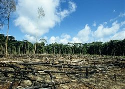
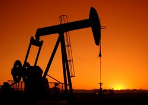
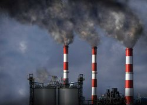

Deforestation
Deforestation is clearing Earth's forests on a massive scale,
often resulting in damage to the quality of the land. Forests still cover about
30 percent of the world’s land area, but swaths the size of Panama are lost each and every year.
The world’s rain forests could completely vanish in a hundred years at the current rate of deforestation.
Forests are cut down for many reasons, but most of them are related to money or to people’s need to provide for
their families.The biggest driver of deforestation is agriculture. Farmers cut forests to provide more room for
planting crops or grazing livestock. Often many small farmers will each clear a few acres to feed their families
by cutting down trees and burning them in a process known as “slash and burn” agriculture.
Fossil Fuels
Many power stations across the world burn fossil fuels (including coal, oil and gas) to generate energy. Coal is the remains of ancient plants and trees that grew over 200 millions of years ago. Oil and gas is made up of the remains of microscopic plankton. Over millions of years these remains become the carbon-rich coal, oil and gas we can use as fuel. When fossil fuels are burned they release carbon dioxide into the atmosphere which contributes to global warming. Using fossil fuels to generate energy also releases pollutants into the atmosphere - such as sulphur dioxide.
Greenhouse Gases
Greenhouse gases trap heat in the atmosphere, which makes the Earth warmer.
Carbon dioxide is the most important greenhouse gas emitted by humans, but several other gases contribute to climate change, too.
Greenhouse gases come from all sorts of everyday activities, such as using electricity, heating our homes, and driving around town.
These greenhouse gases don't just stay in one place after they're added to the atmosphere.
As air moves around the world, greenhouse gases become globally mixed, which means the concentration of a greenhouse
gas like carbon dioxide is roughly the same no matter where you measure it. Even though some countries produce more
greenhouse gases than others, emissions from every country contribute to the problem. That's one reason why climate
change requires global action.